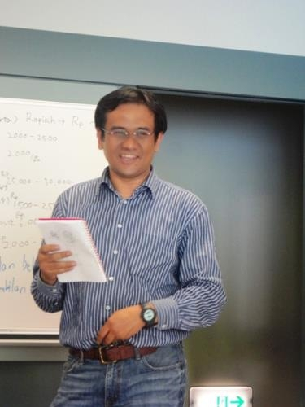

Tentang Para Pengajar
-
Ibu Erika
Beliau adalah pengajar Bahasa Indonesia paruh waktu di SFC. Beliau mempunyai latar belakang kajian asing dan juga mengajar bhs. Indonesia di kampus Mita.

Pak Ari
Beliau mendapatkan master degree dari Universitas Kwansei Gakuin pada tahun 2009. Semenjak itu, Beliau mengajar di Universitas Kristen Satya Wacana(UKSW).
- 
Pak Bambang
Beliau telah mengajar di Keio SFC sejak April 2004. Beliau ahli dalam teknologi penginderaan jauh dan sistem informasi geografis(GIS).
-
Pak Ogasawara
Latar belakang pendidikan beliau adalah sosiologi, dan keahlian beliau adalah pada studi masyarakat Indonesia (Jawa).
-
Ibu Nonaka
Beliau memiliki ketertarikan pada Negara Indonesia yang sangat besar. Pada zaman SMA, beliau sempat mengikuti pertukaran murid di Indonesia.
-
Ibu Melia
Beliau adalah pengajar Bahasa Indonesia paruh waktu di SFC. Beliau mempunyai latar belakang kimia terapan dan suka memasak.